Editorial
178 prompts with preview images. Tap an image to enlarge, “Copy prompt” to grab the text.
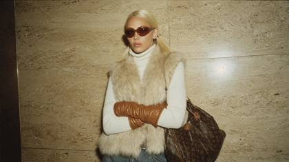
high resolution-resolution, shot on RED, flash-lit early-2000s style paparazzi photo of a glamorous blonde woman with pigtails standing indoors against a beige textured wall. she wears a voluminous beige and white fur vest layered over a fitted white turtleneck sweater, paired with long ruched caramel-brown leather gloves. her arms are crossed confidently, exuding cool, unattainable energy. she has sleek, pin-straight platinum blonde hair that falls past her shoulders, and oversized gradient brown sunglasses covering most of her face. slung over her arm is a large brown Louis Vuitton Damier print handbag with structured leather trim. the image is slightly blurred and grainy, giving it an authentic Y2K digital camera look. her jeans are dark-washed and fitted, completing the luxe-casual winter outfit. the mood is cold, composed, and ultra-rich like a stylish heiress caught waiting for the elevator in a luxury hotel. y2k glam rich girl aesthetic, fur vest outfit, paparazzi-style flash photo, luxury cold-core, 2000s it-girl energy

candid paparazzi outtake: Extremely beautiful woman, blonde hair, big beautiful bright blue eyes, editorial, Vogue magazine cover photoshoot, Shot using a Leica Summilux-M 35mm f/1.4 ASPH lens

A breathtakingly beautiful woman, radiating confidence and grace as a professional model, posing for a high-end fashion magazine cover. Her flawless, luminous skin, achieved with high-quality MAC cosmetics, has a velvety smooth texture, enhancing her natural beauty with expertly applied makeup that highlights her sharp cheekbones and full lips. Her eyes are accentuated with bold, dramatic eye makeup, featuring perfectly blended shadows that make her gaze irresistibly captivating. Her hair is styled to perfection, either cascading in luxurious, voluminous waves or in a sleek, polished updo, each strand meticulously placed to frame her face elegantly. She is dressed in high-fashion, designer attire that exudes sophistication, with exquisite details like delicate embroidery, luxurious fabrics, and subtle embellishments that reflect light beautifully. The setting is a professional photography studio with state-of-the-art equipment, where the background is minimalist and chic, featuring soft, neutral tones or a gradient backdrop that adds depth without detracting from the subject. The lighting setup is expertly crafted, using a three-point lighting system: a soft key light to gently illuminate her face, a fill light to eliminate shadows, and a rim light that adds a subtle glow to her silhouette, creating a sense of depth and separation from the background. The shot is captured with a Canon EOS R5 camera, equipped with a 50mm f/1.2 lens, ensuring a shallow depth of field that brings the subject into sharp focus while creating a dreamy bokeh effect in the background. The image is composed with the magazine cover layout in mind, leaving ample space around the model for bold, elegant text overlays that complement the overall aesthetic of the cover
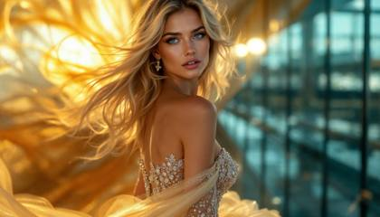
An extremely beautiful woman with flowing blonde hair and big, bright blue eyes, featured in a Vogue magazine cover photoshoot. She transitions between three breathtaking settings: (1) A studio with a cream and gold gradient backdrop, wearing an intricate haute couture gown with silver accents and a dramatic train, captured with soft, diffused lighting and subtle backlighting. (2) A golden hour field, bathed in warm sunlight, her gown sparkling in the natural light, with a soft breeze lifting her hair and train. (3) A sleek, modern architectural space with glass and steel elements, highlighted by dramatic lighting interplay from the setting sun. Shot using a Leica Summilux-M 35mm f/1.4 ASPH lens at f/1.4 aperture, capturing shallow depth of field with creamy cinematic bokeh. Inspired by Peter Lindbergh’s editorial style, Annie Leibovitz’s outdoor romanticism, and Denis Villeneuve’s futuristic elegance
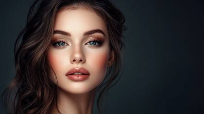
A stunning, elegant woman with striking features, posing confidently as a professional model. She has flawless, radiant skin with a soft, natural glow, and captivating eyes that draw you in. Her hairstyle is meticulously styled, cascading in voluminous waves or a sleek, modern look, perfectly framing her face. She wears high-fashion, designer clothing that exudes sophistication and grace, with intricate details that catch the light. The setting is a luxurious studio with perfect lighting, capturing every detail with a sharp focus. The background is minimalist and chic, with subtle gradients that enhance her presence. Shot with a Canon EOS R5 camera, using a 50mm f/1.2 lens for a shallow depth of field, creating a beautiful bokeh effect that isolates the subject against the background. The lighting is soft and diffused, with a key light emphasizing her face, and a subtle rim light adding depth. This image is designed for a high-end fashion magazine cover, with a layout that allows ample space for bold, elegant text overlays
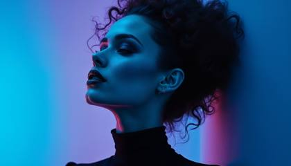
Authentic photo of an exotic, Vogue model on a blue and purple, gradient matte background, with magnificent details, mixed textures of black and white. Showcasing modern luxury and fashion. Includes gloss and matte parts, simple and crisp hairstyles, designer luxury brands. Karl Lagerfeld style designs, stylish and high-end atmosphere

a beautiful woman sitting at a newsdesk reporting the news, Asian, 24 years hold, big beautiful brown eyes. stunning beauty, looking into the camera announcing the nightly news. She's in a newsroom studio with a news ticker strolling on the bottom of the screen, cinematic wide angle photography, hyper realistic, undistinguishable from reality, ultra realistic
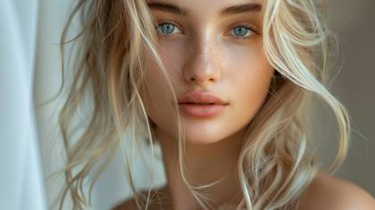
woman, instagram model, 24 year old, blonde hair, blue eyes, in professional magazine photoshoot, photorealistic, soft natural light, highly detailed,

Beautiful woman instagram model ethereal
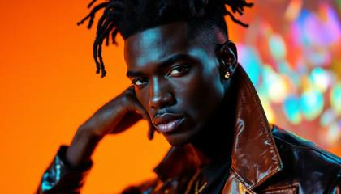
Authentic shots of top model, exotic look, on a orange background, with exquisite details, mixed textures of black and white. Showcasing high-end luxury fashion. Includes gloss and matte parts, simple and crisp hairstyles, designer luxury brands. Karl Lagerfeld style designs, stylish and high-end atmosphere

Editorial style beauty capture. Four-light setup with clamshell lighting and accent lights. Crystal clear 12K resolution showing individual pores and skin translucency. Perfect focus fall-off from eyes to ears. Shot on RED V-Raptor with Canon CN-E prime lens. Dewey skin finish with natural highlight on cheekbones

DSC\_0047.NEF: top fashion model shot, vogue magazine, black and white style, but the woman's lips are red from her lipstick

exquisite model, sharp cheekbones, piercing blue eyes, flawless porcelain skin, wearing avant-garde couture dress, posing against an abstract studio backdrop, dramatic studio lighting, soft shadows, Vogue cover shoot aesthetics, fashion magazine editorial, ultra-detailed, hyperrealistic 16K resolution

A stunning 24-year-old high-fashion model with bleach-blonde waves framing her piercing cerulean-green eyes. Her flawless porcelain skin glows under soft, diffused lighting, highlighting her sculpted cheekbones and deep rouge lips. She wears a midnight-black Chanel haute couture gown, crafted from silk and velvet with gold-thread embroidery, featuring structured shoulders, a plunging neckline, and a flowing golden chiffon cape. Adorned in Cartier high jewelry, she wears diamond chandelier earrings, a sapphire platinum choker, and statement rings, radiating luxury. Captured in a Parisian art-deco editorial studio, with IMAX-quality lighting and an ultra-realistic depth of field, using a Phase One IQ4 150MP camera with an 85mm f/1.2 lens. Every detail, from fabric folds to jewelry reflections, is razor-sharp and hyper-detailed, creating a masterfully balanced, award-winning editorial portrait
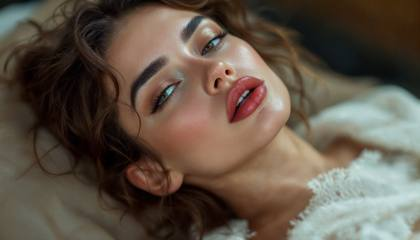
woman, 24 year old instagram model, realistic, Vogue magazine editorial photoshoot style, highly detailed
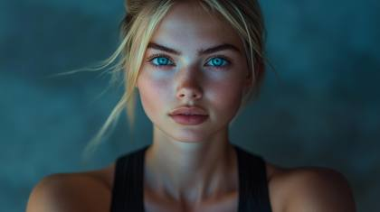
a breathtaking instagram model, 24 years old, blonde hair, big beautiful bright blue eyes, wearing black yoga outfit, Photographed using a Leica SL2 camera with a Summicron-SL 50mm f/2 lens --style raw
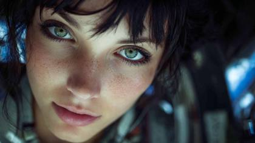
NASA/JPL-Caltech image processing: a beautiful woman, 25 years old, dark hair with emerald green eyes, at the international space station looking down from above at earth

EXTREME REALISM IMAGE, WIDE SHOT, SHOT ON A PROFESSIONAL NBC NIGHTLY NEWS CAMERA, BEAUTIFUL ANCHOR WOMAN SITTING AT A NEWSDESK LOOKING INTO THE CAMERA REPORT THE NEWS, THE SKYLINE OF NEW YOUR CITY APPEARS IN THE BACKGROUND THROUGH A WINDOW
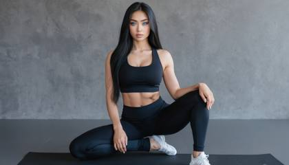
A sultry, high-fashion, sensual woman, 24 years old, instagram model, asian, big beautiful blue eyes, long dark hair, in fitness clothing, black yoga pants, posing for a magazine editorial photoshoot, extremely realistic

A stunning 24-year-old high-fashion model with chestnut-brown waves framing her piercing cerulean-blue eyes. Her flawless porcelain skin glows under soft, diffused lighting, highlighting her sculpted cheekbones and deep rouge lips. She wears a midnight-black Chanel haute couture gown, crafted from silk and velvet with gold-thread embroidery, featuring structured shoulders, a plunging neckline, and a flowing golden chiffon cape. Adorned in Cartier high jewelry, she wears diamond chandelier earrings, a sapphire platinum choker, and statement rings, radiating luxury. Captured in a Parisian art-deco editorial studio, with IMAX-quality lighting and an ultra-realistic depth of field, using a Phase One IQ4 150MP camera with an 85mm f/1.2 lens. Every detail, from fabric folds to jewelry reflections, is razor-sharp and hyper-detailed, creating a masterfully balanced, award-winning editorial portrait
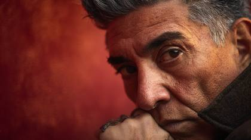
Andres Serrano style photo
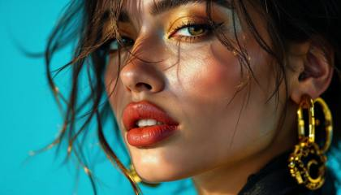
Authentic shot of a top model, professional photoshoot for Vogue Magazine, a bright blue background, with exquisite details, mixed textures of black and gold. Featuring ultra luxury fashion. Simple, yet elegant hairstyles, designer brands with a luxury aesthetic. Tom Ford style designs, stylish and high-end atmosphere

A high-end editorial portrait for a fashion magazine. A beautiful 24-year-old woman with dark hair, freckles, and intense blue eyes. She is wearing a vibrant yellow dress against a deep blue background. Sharp focus, ultra-detailed textures. Hasselblad H6D-100c, 135mm f/2.8, high-key lighting, professional studio setup, 8K, fashion editorial, glossy finish, hyper-realistic, seed 54321

fashion model in haute couture gown ::1 cinematic fashion photography, Vogue editorial style ::1 dramatic atmosphere, soft blue hour lighting, shallow depth of field macro shot, professional studio lighting setup, high fashion composition, crisp details, Canon EOS R5, 85mm f/1.2 lens ::1
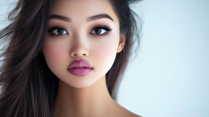
Professional headshot with studio lighting. Captured at 100 megapixels. Perfect focus on the eyes showing detailed iris patterns and natural catch lights. Natural makeup enhancing features. Shot with clean white backdrop, using Profoto lighting setup with soft boxes. Subtle hair movement caught in motion
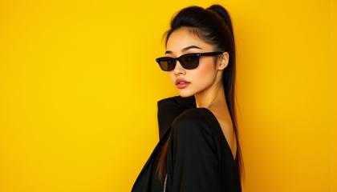
Authentic shots of top model on a bright yellow background, with exquisite details, mixed textures of black and gold. Showcasing high-end luxury fashion. Simple and crisp hairstyles, designer luxury brands. Philipp Plein style designs, stylish and high-end atmosphere
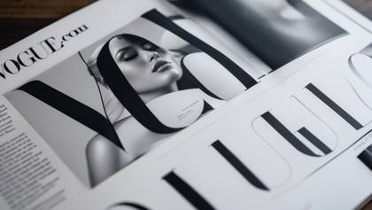
vogue.com layout, page 92: Encourages full-bleed, white-margin compositions with headline spacing and subtle text overlays, mirroring genuine print spreads.
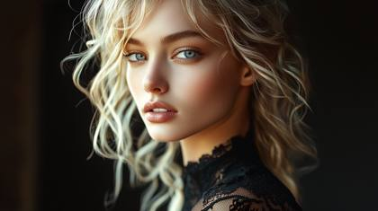
Authentic shots of top model on a bright black background, with exquisite details. Showcasing high-end luxury fashion. Simple and crisp hairstyles, designer luxury brands. Philipp Plein style designs, stylish and high-end atmosphere, professional editorial photo, photorealistic photography, highly detailed, shot on a Hasselblad XCD 80mm f/1.9

An extremely beautiful woman with flowing blonde hair and big, bright blue eyes, captured in a Vogue magazine cover photoshoot. She wears an intricate haute couture gown with silver accents and a dramatic train. The background features soft cream and gold gradients with subtle textures, creating a luxurious and timeless ambiance. Shot using a Leica Summilux-M 35mm f/1.4 ASPH lens at f/1.4 aperture, the shallow depth of field isolates her glowing face and shimmering blue eyes, while the edges blur into creamy cinematic bokeh. Studio lighting with a soft key light and backlighting highlights her features and hair. Inspired by Peter Lindbergh's editorial elegance and Annie Leibovitz's storytelling portraiture
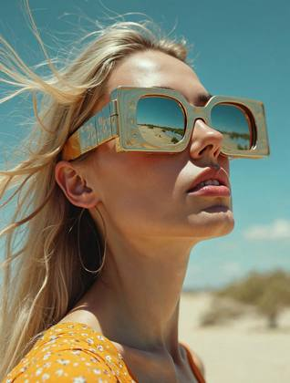
Editorial portrait where sunglasses warp into surreal dreamscapes, background bending in impossible geometry, surrealist\_lenswarp.dreamscape

Extremely beautiful woman, blonde hair, big beautiful bright blue eyes, editorial, Vogue magazine cover photoshoot, Shot using a Leica Summilux-M 35mm f/1.4 ASPH lens --ar 16:9
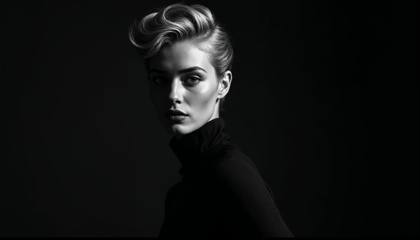
Authentic photo of an exotic, Vogue model on matte black background, with magnificent details, mixed textures of black and white. Showcasing modern luxury and fashion. Includes gloss and matte parts, simple and crisp hairstyles, designer luxury brands. Karl Lagerfeld style designs, stylish and high-end atmosphere
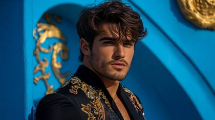
Authentic shots of handsome, masculine superhero, looking into the camera speaking, top model on a crisp blue background, with exquisite details, mixed textures of black and gold. Showcasing high-end luxury fashion. Simple and crisp hairstyles, designer luxury brands. Philipp Plein style designs, stylish and high-end atmosphere

IMG\_1234.ARW: top fashion model shot, vogue magazine, Technirama
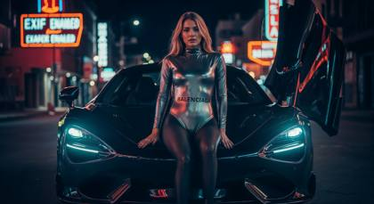
Editorial night shot of a 24-year-old female influencer seated on the hood of a matte black McLaren 765LT, city lights reflecting in her metallic Balenciaga bodysuit. Neon signs blur in the background. Shot on Sony A7R V + G-Master 35mm f/1.4, with cinematic low-key lighting, accented by LED underglow and soft backlight bloom. Tagged EXIF metadata enabled, moody shadows, 16:9 framing, film-style LUT applied for hyper-realism.
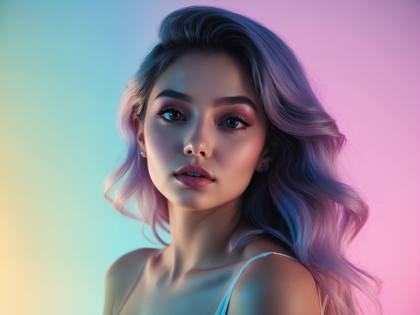
Ethereal gradient lighting beautiful instagram model
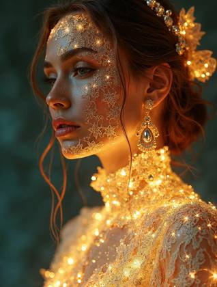
Fashion portrait of a model in lace and gold jewelry transforming into glowing holographic filigree, baroque\_hologram.opulence, ultra-detailed Vogue cover
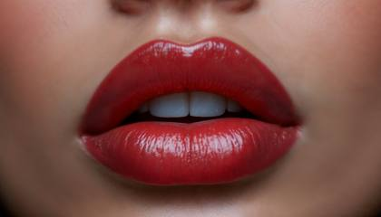
IMG\_9854.CR2: ultra realistic, extreme close-up of a beautiful woman's lips, editorial vogue magazine fashion photo

Hasselblad X2D Vogue cover photo: a man and woman, 24 years old glamour models standing side by side
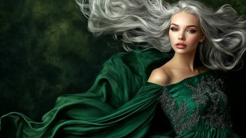
A stunning studio portrait of a beautiful woman with flowing silver hair, wearing an elegant emerald green evening gown. Captured with a Hasselblad H6D-100c, every detail of her delicate features and the intricate embroidery of her dress is rendered in ultra-high-resolution. The backdrop is a gradient of deep forest green to black, illuminated by a soft spotlight. The image showcases perfect lighting from large softboxes, creating a soft shadow gradient and accentuating her luminous skin tone. The dynamic range highlights every subtle texture and tone, giving the image a painterly, fine-art quality
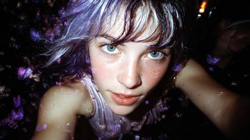
A raw, candid 35mm film photograph of a 24-year-old high-fashion model caught mid-sprint in a rainy Tokyo alleyway at night. Her long, messy hair is a chaotic blend of deep violet and bleached blonde streaks, wet and plastered to her forehead. Her piercing blue eyes are wide, reflecting the harsh, white flash of a paparazzo's camera. The Surreal Twist: Her trailing leg and the hem of her silk dress are de-materializing into a cloud of iridescent purple butterflies and static noise. High-grain ISO 800, motion blur on the edges, harsh direct-flash shadows, realistic skin texture with visible water droplets and goosebumps. No digital smoothing.

EXTREME REALISM IMAGE, WIDE SHOT, SHOT ON A PROFESSIONAL NBC NIGHTLY NEWS CAMERA, BEAUTIFUL ANCHOR WOMAN SITTING AT A NEWSDESK LOOKING INTO THE CAMERA REPORT THE NEWS, THE SKYLINE OF NEW YOUR CITY APPEARS IN THE BACKGROUND THROUGH A WINDOW
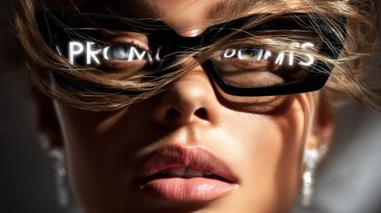
Waist up shot, Generate a hyper-realistic beauty portrait of a glamorous fashion model, wearing black Chanel sunglasses, with the word "PROMPTS" on both lenses in a translucent but bold text in white letters, photographed in natural directional light, with luminous skin texture, vibrant lips, and expressive eyes. Include dynamic elements like wind-tousled hair, dramatic diamond jewelry, and a shallow depth of field that enhances facial contours. Use a camera setup such as Canon EOS R5 + RF 85mm f/1.2L lens or Phase One IQ4 with Schneider Kreuznach 110mm LS f/2.8. The image should simulate high-end editorial photography seen in Vogue or Harper’s Bazaar, with style is cyberpunk aesthetic. Add detailed skin micro-texture, soft bokeh, and realistic shadow gradients. Output in 8K, ultra-high fidelity, styled for a luxury skincare or haute couture campaign.

A 24-year-old exotic woman, green-eyed and styled like an Instagram model, in a professionally photographed image with a modern flat design. The setting features thick fog and low visibility. Color palette: cool blues, greens, and purples. Simple, two-dimensional shapes are used.

Asian woman, 24 years old in sunglasses smoking smoke cigarette with smoke over background, in the style of realistic still lifes with dramatic lighting, light teal and amber, dmitry kustanovich, 32k uhd, neon and fluorescent light, mars ravelo, close-up
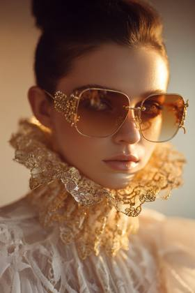
Luxury editorial portrait with oversized sunglasses and gold lace collar, high-fashion, halation\_glow2024, Vogue photography style
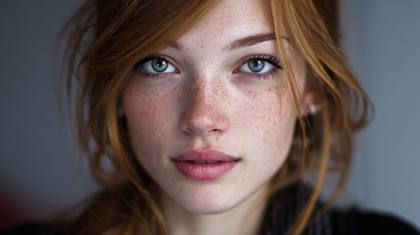
The most realistic editorial stills grab image ever, an extraordinary 24-year-old beautiful woman

extremely beautiful woman, 24 years old, blonde hair, blue eyes, instagram fitness model, in professional studio, ultra-realistic, volumetric lighting, visible light beams, dust particles, god rays, atmospheric perspective, foggy, highly detailed, ultra-high resolution, exceptional clarity, professional-grade image quality, shot on Sony A1 with Zeiss Otus 85mm f/1.4, HDR processing, photojournalistic style, documentary realism, untouched,
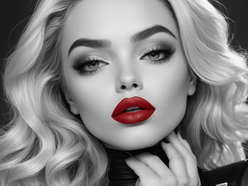
beautiful woman, instagram model, the entire image is in black and white except for the superhero’s lips, the lips are red from red lipstick
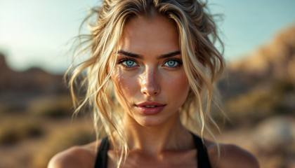
a breathtaking instagram model, 24 years old, blonde hair, big beautiful bright blue eyes, wearing black yoga outfit, Photographed using a Leica SL2 camera with a Summicron-SL 50mm f/2 lens
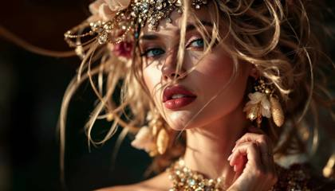
DSC\_0047.NEF: top fashion model shot, vogue magazine
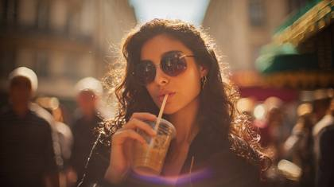
Candid editorial-style paparazzi capture of a 24-year-old Italian-Latina woman, thick dark wavy hair and crystal blue eyes, sipping iced coffee while walking down Paris street, oversized sunglasses half-off face, wind fluttering skirt, golden hour city backdrop, Leica M10-R + Noctilux-M 50mm f/0.95 ASPH, deep cinematic bokeh, ISO grain texture, unfiltered fashion magazine realism, visible lens flare, slight light leak on left frame edge, DSC\_5187.CR2.
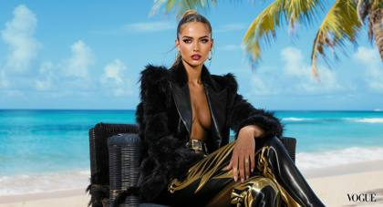
C0001.R3D: Authentic shot of a top model, sitting down on a black chair, professional photoshoot for Vogue Magazine, a bright blue sky on the beach with palm trees in the background, with exquisite details, mixed textures of black and gold. Featuring ultra luxury fashion. Simple, yet elegant hairstyles, designer brands with a luxury aesthetic. Tom Ford style designs, stylish and high-end atmosphere
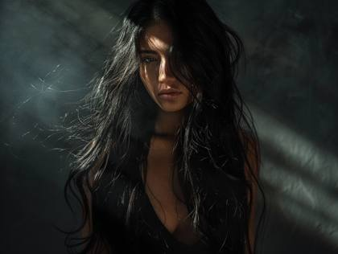
Masterpiece photography of a stunning girl with long, iridescent black hair. She wears a black tank top. The intricate details are detailed. The sunlight passes through her hair, creating an abstract background with high contrast

EXTREME REALISM IMAGE, WIDE SHOT, SHOT ON A PROFESSIONAL NBC NIGHTLY NEWS CAMERA, BEAUTIFUL INSTAGRAM MODEL, ASIAN, 24 YEARS OLD, BURNETTE HAIR, BIG AND BEAUTIFUL HAZEL EYES, STUNNING BEAUTY, AS AN ANCHOR WOMAN SITTING AT A NEWSDESK LOOKING INTO THE CAMERA REPORT THE NEWS, THE SKYLINE OF NEW YOUR CITY APPEARS IN THE BACKGROUND THROUGH A WINDOW,, THE NBC NEWS LOGO CAN BE SEEN IN THE IMAGE WITH THE TEXT "NEWS"

An extremely beautiful woman with flowing blonde hair and big, bright blue eyes, featured in a Vogue magazine cover photoshoot. She transitions between three breathtaking settings: (1) A studio with a cream and gold gradient backdrop, wearing an intricate haute couture gown with silver accents and a dramatic train, captured with soft, diffused lighting and subtle backlighting. (2) A golden hour field, bathed in warm sunlight, her gown sparkling in the natural light, with a soft breeze lifting her hair and train. (3) A sleek, modern architectural space with glass and steel elements, highlighted by dramatic lighting interplay from the setting sun. Shot using a Leica Summilux-M 35mm f/1.4 ASPH lens at f/1.4 aperture, capturing shallow depth of field with creamy cinematic bokeh. Inspired by Peter Lindbergh’s editorial style, Annie Leibovitz’s outdoor romanticism, and Denis Villeneuve’s futuristic elegance

Imagine the most beautiful blonde woman in the world with golden, cascading hair that shines with natural luster and waves gracefully around her shoulders. Her eyes are a captivating shade of blue, sparkling with warmth and intelligence. She has flawless, radiant skin with a subtle, healthy glow. Her facial features are delicate yet striking, with high cheekbones, a perfectly sculpted nose, and full, inviting lips. She has a graceful neck and a poised, elegant demeanor. Her style is timeless and chic, exuding confidence and sophistication. She carries herself with a natural grace and charm that leaves a lasting impression on everyone she meets.
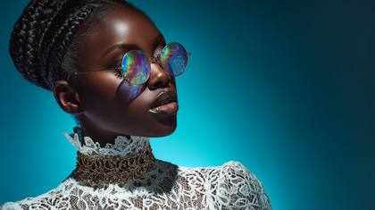
Studio editorial portrait of a Nigerian woman, radiant dark glowing skin, sleek braided bun, wearing couture lace high-neck blouse and gold Baroque choker with gems, round sunglasses with iridescent rainbow reflection, glossy bold lips, beauty dish light high right, cyan seamless backdrop, ultra realistic, Hasselblad X2D look, RAW skin texture, melanin\_rich\_glow
grammy awards, beautiful 24 year woman, blonde hair, wearing a glamorous dress with sequence, accepting a grammy award
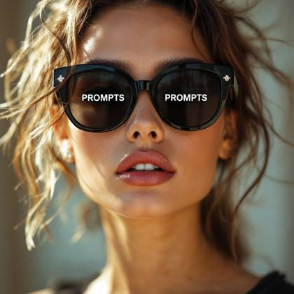
Waist up shot, Generate a hyper-realistic beauty portrait of a glamorous fashion model, wearing black Chanel sunglasses, with the word "PROMPTS" on both lenses in a translucent but bold text in white letters, photographed in natural directional light, with luminous skin texture, vibrant lips, and expressive eyes. Include dynamic elements like wind-tousled hair, dramatic diamond jewelry, and a shallow depth of field that enhances facial contours. Use a camera setup such as Canon EOS R5 + RF 85mm f/1.2L lens or Phase One IQ4 with Schneider Kreuznach 110mm LS f/2.8. The image should simulate high-end editorial photography seen in Vogue or Harper’s Bazaar, with style is cyberpunk aesthetic. Add detailed skin micro-texture, soft bokeh, and realistic shadow gradients. Output in 8K, ultra-high fidelity, styled for a luxury skincare or haute couture campaign.
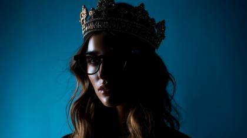
photographic silhouette of a beautiful 24 year old woman, she's a queen wearing a diamond encrusted crown, wearing high-end fashion techwear, background is a prussian blue gradient, clothing is minimal, hyperrealistic scene, the woman is just slightly visible due to dark shadows, she is wearing thick white glasses, long wavy hair, a black hat with the word "PROMPTS" on it
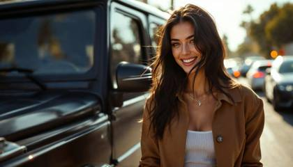
Natural-looking paparazzi-style shot of a 24-year-old fashion model influencer, Italian-Latina heritage, long black hair, vibrant pale blue eyes, casual pose laughing mid-conversation, standing beside a matte black G-Wagon in Beverly Hills, late afternoon, warm natural sunlight, Leica M11-P + Summilux-M 35mm f/1.4 ASPH lens, DSC\_3002.CR2, rich tonal contrast, minor motion blur on background cars, film-like grain, fashion editorial RAW outtake.
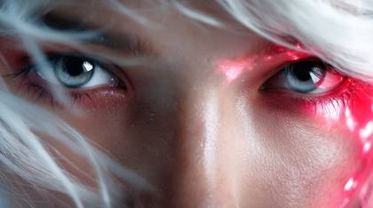
photograph of a woman, in the style of fashion photography, dark white and light crimson, close-up, shiny eyes, esports, digital hologram
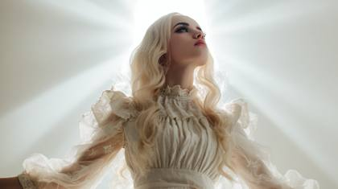
the most unique, creative and realistic photo of a 24 year old luxury model ever, 24 year old mystical woman with angelic beauty, surrounded by God Rays on a solid white background, shot in the style of Abigail Larson

top fashion model shot, vogue magazine, Macro shot
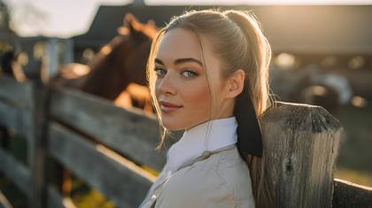
Ultra-realistic portrait of a 26-year-old rich auburn fashion influencer with emerald green eyes, styled in a low, sleek ponytail tied with a black silk ribbon, wearing a crisp white collared blouse, tailored beige jodhpours, and tall black leather riding boots, posing leaning gently against a rustic wooden fence, looking over her shoulder at the camera with a soft smile at a sun-dappled stable yard with a thoroughbred horse in the soft-focus background during the golden hour. Shot on Sony a7 IV with an 85mm f/1.4 GM lens at f/1.8, ISO 100. Natural golden hour backlighting. Includes photoreal skin details, shadows, gloss, and cinematic bokeh. Tokens: IMG\_4623.CR2, editorial\_skin\_sheen2024, iPhone14.Pro.front.cam, Instagram.export.v2, subsurface\_scattering.

Beautiful Caucasian woman with long blonde hair, styled in an elegant updo, wearing a sleeveless white dress and standing in front of a plain white background, posing confidently for an Instagram photoshoot

Ethereal, Gradient, A stunning, elegant woman with striking features, posing confidently as a professional model. She has flawless, radiant skin with a soft, natural glow, and captivating eyes that draw you in. Her hairstyle is meticulously styled, cascading in voluminous waves or a sleek, modern look, perfectly framing her face. She wears high-fashion, designer clothing that exudes sophistication and grace, with intricate details that catch the light. The setting is a luxurious studio with perfect lighting, capturing every detail with a sharp focus. The background is minimalist and chic, with subtle gradients that enhance her presence. Shot with a Canon EOS R5 camera, using a 50mm f/1.2 lens for a shallow depth of field, creating a beautiful bokeh effect that isolates the subject against the background. The lighting is soft and diffused, with a key light emphasizing her face, and a subtle rim light adding depth. This image is designed for a high-end fashion magazine cover, with a layout that allows ample space for bold, elegant text overlays
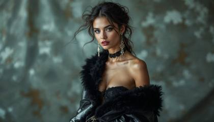
top fashion model shot, vogue magazine, Award winning photography
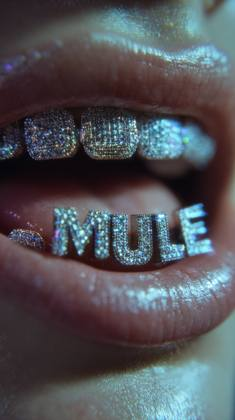
Ultra close-up of a smiling 24 year old woman's mouth with shiny custom diamond grill spelling out "MULE", sticking out the tongue, hyper-realistic photography, detailed teeth and lips, vibrant colors, cinematic lighting, high detail, macro photography, luxury aesthetic, jewelry sparkle, 8k
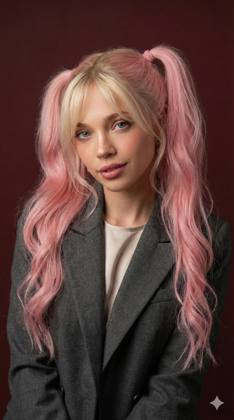
A professional, high-resolution profile photo, maintaining the exact facial structure, identity, and key features of the person in the input image. The subject is framed from the chest up, with ample headroom. The person looks directly at the camera. They are styled for a professional photo studio shoot, wearing a premium smart casual blazer in a subtle charcoal gray. The background is a solid '#562226' neutral studio color. Shot from a high angle with bright and airy soft, diffused studio lighting, gently illuminating the face and creating a subtle catchlight in the eyes, conveying a sense of clarity. Captured on an 85mm f/1.8 lens with a shallow depth of field, exquisite focus on the eyes, and beautiful, soft bokeh. Observe crisp detail on the fabric texture of the blazer, individual strands of hair, and natural, realistic skin texture. The atmosphere exudes confidence, professionalism, and approachability. Clean and bright cinematic color grading with subtle warmth and balanced tones, ensuring a polished and contemporary feel.
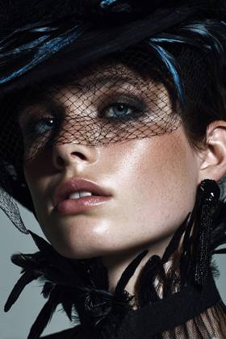
ELLE fashion editorial shot, bold couture styling, cinematic strobe, hyperrealism.elite\_magazine, ProRes 4444XQ
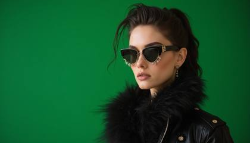
Authentic shots of top model on a green background, with exquisite details, mixed textures of black and gold. Showcasing high-end luxury fashion. Simple and crisp hairstyles, designer luxury brands. Philipp Plein style designs, stylish and high-end atmosphere

Modern glamour headshot. Captured at 24K resolution. Complex five-light setup including beauty dish, fill light, two rim lights, and background light. Shot on ARRI Alexa 65 with Master Prime lenses. Perfect focus on combination of eyes and lips. Individual peach fuzz visible on skin. Natural contouring enhanced by precise lighting placement

Use the person in the input image @luna-new as the ONLY subject. Preserve their identity and facial features clearly. Create a hyper-realistic high-fashion editorial photo inside a surreal 3D geometric “color box” room (a hollow cube / tilted cube set). Each render MUST randomly choose: 1) a bold single-color box vivid and saturated, 2) a dynamic “cool” fashion pose (gravity-defying or extreme stretch / leap / sideways bracing against the walls), 3) a dramatic camera angle tilted horizon. The subject appears full-body and sharp, wearing an avant-garde fashion styling that feels modern and editorial premium fabric texture. Keep clothing tasteful and fashion-forward. The subject’s pose should feel athletic, stylish, and unusual—like a magazine campaign shot. Lighting: studio quality, crisp and cinematic; strong key light with controlled soft shadows, subtle rim light; realistic reflections and bounce light from the colored walls. Ultra-detailed skin texture, natural pores, realistic fabric weave, clean edges, high dynamic range. Composition: subject centered with plenty of negative space and strong geometric lines; the box perspective frames the subject. Color: the box color is a SINGLE bold color and MUST be different each run (random vivid hue). The subject’s outfit contrasts well with the box color. Output: hyper-real, photorealistic, 8k detail, editorial campaign quality, sharp focus on subject, no motion blur, no distortion of face, natural proportions. -new
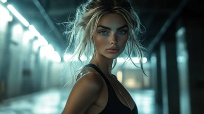
Cinematic still of a woman standing in a cyberpunk world outside, wearing a black fitness outfit, emulate a Krasnogorsk-3, Kodak Super 8, Insta360 ONE R, Agfa Movexoom

Classic black and white portrait. Shot at 175 megapixels. Dual softbox setup with precision barn doors for dramatic shadow play. Every eyelash defined against bright catchlights. Captured with medium format GFX100S, showing incredible tonal range. Natural skin texture with subtle makeup. Individual hair strands visible in highlights.3
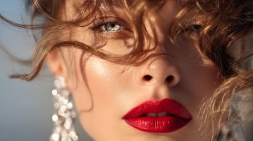
Close-up luxury beauty portrait of a high-fashion model with glowing porcelain skin, ruby red lips, and sparkling sapphire eyes, shot on Canon EOS R5 + RF 85mm f/1.2L, soft golden hour light casting radiant glow across her cheekbones, wind-blown loose curls, oversized diamond chandelier earrings, cinematic bokeh, realistic skin pores and fine detail, high-end Vogue magazine style, perfect for a Dior lipstick campaign, photorealistic in 8K resolution
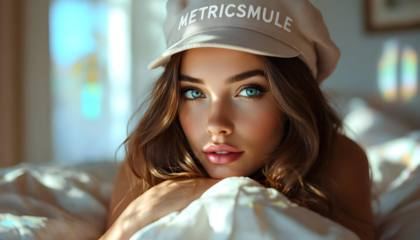
Create me an iphone close-up shot of a beautiful instagram model at home in her bedroom, shot on an iphone. Natural lighting through the curtains. She has brunette hair, blue eyes and sits on the bed. Wearing a hat with “METRICSMULE” on it, clear, white, modern lettering, forward facing, looking into the camera

CAPTURE A STUNNING EDITORIAL PHOTOSHOOT OF A BEAUTIFUL WOMAN UTILIZING THE ARRI ALEXA 65 UNPARALLELED RESOLUTION AND DYNAMIC RANGE, THE SCENE SHOULD FEATURE DRAMATIC LIGHTING AND LUXURIOUS TEXTURES, HIGHLIGHTING THE MODEL’S ELEGANCE AND THE RICH DETAIL OF HAUTE COUTURE FASHION AGAINST A BACKDROP OF OPULENT DECOR

C0001.R3D: Authentic shot of a top model, professional photoshoot for Vogue Magazine, a bright blue background, with exquisite details, mixed textures of black and gold. Featuring ultra luxury fashion. Simple, yet elegant hairstyles, designer brands with a luxury aesthetic. Tom Ford style designs, stylish and high-end atmosphere

A close-up portrait of a 28-year-old woman with radiant olive-toned skin, piercing hazel eyes, and soft, wavy brown hair that gently falls over her shoulders. The setting is an outdoor café during the golden hour, with warm sunlight softly illuminating her face, casting natural shadows that enhance her features. She wears a casual yet elegant outfit, featuring a light beige knit sweater with delicate textures visible in the fabric. Tiny details such as freckles, subtle skin imperfections, and the texture of her lips are rendered with absolute clarity. The background is a slightly blurred bokeh effect, showcasing lush green trees and soft hints of the café environment. Captured with a Sony Alpha 1 camera, using an 85mm f/1.4 lens, the composition emphasizes a shallow depth of field for maximum focus on the subject. The lighting is natural, with gentle highlights on her cheekbones and a soft catchlight in her eyes, creating a lifelike, emotive expression. This image is so detailed and realistic that it is indistinguishable from a professional studio photograph or reality

Extremely beautiful woman, blonde hair, big beautiful bright blue eyes, editorial, Vogue magazine cover photoshoot, Shot using a Leica Summilux-M 35mm f/1.4 ASPH lens

Professional headshot with studio lighting. Captured at 100 megapixels. Perfect focus on the eyes showing detailed iris patterns and natural catch lights. Natural makeup enhancing features. Shot with clean white backdrop, using Profoto lighting setup with soft boxes. Subtle hair movement caught in motion

A young woman with dark hair and striking blue eyes, facing forward in a professional studio setting. The image is a beauty portrait with exquisite detail on skin texture, hair strands, and eye reflection. She wears a yellow lace top and gold earrings. Sony Alpha 7R IV, 70-200mm f/2.8, studio strobe with beauty dish, 8K, beauty photography, clean aesthetic, photorealistic rendering, seed 67890.
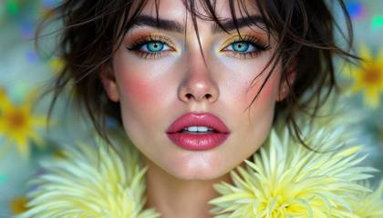
top fashion model shot, vogue magazine, Hyperspectral Imaging
Beautiful woman instagram model ethereal
top fashion model shot, vogue magazine, Futuristic and avant-garde

DSC\_0047.NEF: top fashion model shot, vogue magazine
An extremely beautiful woman with flowing blonde hair and big, bright blue eyes, featured in a Vogue magazine cover photoshoot. She transitions between three breathtaking settings: (1) A studio with a cream and gold gradient backdrop, wearing an intricate haute couture gown with silver accents and a dramatic train, captured with soft, diffused lighting and subtle backlighting. (2) A golden hour field, bathed in warm sunlight, her gown sparkling in the natural light, with a soft breeze lifting her hair and train. (3) A sleek, modern architectural space with glass and steel elements, highlighted by dramatic lighting interplay from the setting sun. Shot using a Leica Summilux-M 35mm f/1.4 ASPH lens at f/1.4 aperture, capturing shallow depth of field with creamy cinematic bokeh. Inspired by Peter Lindbergh’s editorial style, Annie Leibovitz’s outdoor romanticism, and Denis Villeneuve’s futuristic elegance

top fashion model shot, vogue magazine, Luxury and opulence

Close-up of a model with blonde hair in the style of Tom Ford fashion, ultra realistic photograph
beautiful woman, instagram model, the entire image is in black and white except for the superhero’s lips, the lips are red from red lipstick
A dewdrop clings to the edge of a spiderweb at dawn, perfectly refracting a miniature forest scene within the drop. Background softly blurred with sunrise bokeh. Extreme macro detail of silk threads, glistening with moisture. Shot simulation: Nikon D850 + 105mm f/2.8 macro at f/8. Keywords: macro realism, bokeh, refracted reflection, nature close-up, EXIF realism, optical texture fidelity.
Vogue editorial layout, shot on 70mm film, 1990s supermodel, contact sheet with markings
8K ultra-realistic photograph of a woman, in the style of fashion photography, dark white and light blue, close-up, shiny eyes, esports, digital hologram
Surreal infrared tones, volumetric lighting. Ultra-realistic close-up of person drinking Pepsi, focus on lips and liquid. Realistic skin, condensation, reflections. Visible light beams, infrared spectrum, otherworldly appearance. 4K resolution, commercial style.
C0001.R3D: Authentic shot of a top model, sitting down on a black chair, professional photoshoot for Vogue Magazine, a bright blue background, with exquisite details, mixed textures of black and gold. Featuring ultra luxury fashion. Simple, yet elegant hairstyles, designer brands with a luxury aesthetic. Tom Ford style designs, stylish and high-end atmosphere
woman, instagram model, 24 years old, Vogue magazine professional photoshoot style, professional composition, perfect lighting, artistic rendering, balanced color palette, expert technique, highly detailed, intricate micro details, crisp focus, textural complexity, meticulous rendering, hyper-detailed elements, fine textures, ultra-high resolution, premium quality render

stills archive, snow white live action, disney .com
A 24-year-old Gucci ambassador is photographed stepping out of a black car in Cannes, flashes popping, her gown shimmering under red carpet lighting. Shot at night using a Canon EOS-1D X Mark III + EF 135mm f/2L, the image captures chaos and elegance in equal parts. The vibe mimics a candid paparazzi outtake, using realism tokens like print contact proof and from Vogue stills archive, rendering ultra-HD editorial realism with a fast shutter look.
Vogue magazine fashion model, 24 years old, LEICA\_M11.DNG, shot on Leica M11 with Summilux 50mm f/1.4 lens, photorealistic DSLR image quality, studio lighting, posing inside a futuristic glass cube, soft highlights and clean shadows, EXIF: f/1.4, ISO 100, 1/500s, vogue.com layout, ultra high-definition, editorial tone, cinematic composition, subtle lens bloom, real-world depth of field
A 24-year-old exotic woman, green-eyed and styled like an Instagram model, in a professionally photographed image with a modern flat design. The setting features thick fog and low visibility. Color palette: cool blues, greens, and purples. Simple, two-dimensional shapes are used.
Generate a hyper-realistic beauty portrait of a glamorous fashion model, photographed in natural directional light, with luminous skin texture, vibrant lips, and expressive eyes. Include dynamic elements like wind-tousled hair, dramatic diamond jewelry, and a shallow depth of field that enhances facial contours. Use a camera setup such as Canon EOS R5 + RF 85mm f/1.2L lens or Phase One IQ4 with Schneider Kreuznach 110mm LS f/2.8. The image should simulate high-end editorial photography seen in Vogue or Harper’s Bazaar. Add detailed skin micro-texture, soft bokeh, and realistic shadow gradients. Output in 8K, ultra-high fidelity, styled for a luxury skincare or haute couture campaign.

ultra-realistic close-up of a beautiful woman's face, strong focus on the lips, realistic skin texture, natural lighting, cinematic composition, depth of field effect, intense visual clarity and realism, commercial product photography style, 4K resolution
Hyper-realistic portrait photo of a stunning mid-20s Scandinavian woman gazing directly into the camera with a subtle, enigmatic smile, platinum blonde hair styled in loose braided pigtails with wispy strands framing her face, piercing deep blue eyes reflecting soft window light, porcelain skin with faint natural freckles and visible pore texture, high cheekbones and soft jawline adding elegant allure, toned slender figure clad in luxury fashion--a creamy white cashmere turtleneck sweater tucked into high-waisted black leather pants from Dior, accessorized with delicate gold earrings, standing poised in a sunlit modern loft apartment with blurred floor-to-ceiling windows in the background revealing a hazy cityscape, soft natural diffused light from an overcast afternoon casting gentle highlights and subtle shadows across her features for intimate depth, shallow depth of field isolating her sharply against the bokeh-filled backdrop, photorealistic with authentic skin imperfections, fine hair details, and fabric creases for ultimate lifelike quality. Shot on Leica M11 + Summilux 35mm f/1.4 lens at f/1.4, ISO 400, 1/125 shutter, emulating Kodak UltraMax 400 film colors with warm saturated tones, subtle grain, and vintage color shifts. IMG\_4231.CR2, raw unprocessed film scan, archival Kodak negative emulation, stills archive, elle.com, EXIF:35mmEquiv=35mm.

top fashion model shot, vogue magazine, Sophistication and style
Authentic shots of top model, beautiful woman, Asian, green eyes, exotic look, on a orange background, with exquisite details, mixed textures of black and white. Showcasing high-end luxury fashion. Includes gloss and matte parts, simple and crisp hairstyles, designer luxury brands. Karl Lagerfeld style designs, stylish and high-end atmosphere
ultra-realistic close-up of a person drinking from a Pepsi can, strong focus on the lips gently touching the can’s opening and the detailed motion of the liquid being consumed, realistic skin texture, condensation on the can, subtle reflections, natural lighting, cinematic composition, depth of field effect to emphasize the drinking moment, intense visual clarity and realism, commercial product photography style, 4K resolution

beautiful young woman ::1 Color Palette Black theme, photography ::1

Clean minimalist portrait. Shot against seamless gray backdrop at 120 megapixels. Using Profoto B10X lights with 5-foot octobox as key light. Natural loose hair caught mid-movement with wind machine. Ultra-sharp focus on iris detail showing individual color variations. Subtle smile creating authentic expression lines. Shot on Sony A7R V.

A 24-year-old exotic woman, green-eyed and styled like an Instagram model, in a professionally photographed image with a modern flat design. The setting features thick fog and low visibility. Color palette: vibrant purples, blues, and pinks. Simple, two-dimensional shapes are used.

A high-end editorial portrait for a fashion magazine. A handsome 24-year-old Italian man with dark slicked back hair, intense light brown eyes. He is wearing a jet black Armani suit against a deep blue background. Sharp focus, ultra-detailed textures. Hasselblad H6D-100c, 135mm f/2.8, high-key lighting, professional studio setup, 8K, fashion editorial, glossy finish, hyper-realistic, seed 54321
Generate a hyper-realistic beauty influencer featuring 24-year-old female influencer with green eyes, freckles, red hair, luxury diamond earrings, captured with ultra-high realism. Close-up shot, cinematic editorial lighting, photographed using Canon EOS R5 + RF85mm F1.2L lens, Leica SL2-S + Summilux-M35f9/1.4 ASPH, Fujifilm GFX100S, IMG\_9837.CR3, DSC\_0047.NEF, RAW 16-bit TIF export. Focus on authentic skin textures, natural imperfections, hyper-detailed pores, visible freckles, stray hair strands, realistic depth of field, soft bokeh background, unretouched beauty. Lighting setup: HDRI studio key light + natural golden hour backfill. Style influences: Vogue cover shoot, Instagram influencer aesthetics, cinematic Hollywood grading. Composition: extreme close-up, sharp focus on eyes and skin surface, subtle specular highlights on lips and jewelry, 8K resolution ultra-detail
A stunning 24-year-old woman with striking blue eyes and flowing platinum blonde hair sits elegantly in a professional movie studio, poised for an ultra-high-end cinematic photoshoot. She exudes confidence and grace, her skin illuminated by meticulously crafted studio lighting that sculpts her features with soft highlights and deep shadows. The background consists of a dimly lit Hollywood-style set, with large softbox lights, C-stands, and subtle haze in the air, enhancing the cinematic atmosphere. Captured with an ARRI ALEXA 65 using a Leica Summilux-M 35mm f/1.4 ASPH, the shot delivers breathtaking realism, creamy bokeh, and an immersive depth of field. The composition is a tight-medium shot, drawing focus to her expressive gaze while allowing glimpses of the professional studio setup. The lighting blends warm golden tones with cool blue backlights, creating a balanced contrast that accentuates her contours and the elegance of her outfit-- a sleek, form-fitting black dress with a subtle shimmer that catches the light. The scene is meticulously composed, inspired by the portrait photography of Annie Leibovitz and the cinematic framing of Christopher Nolan, ensuring a dramatic yet sophisticated aura. The overall atmosphere is a fusion of high-fashion editorial and Hollywood prestige, evoking the allure of an A-list actress in an exclusive magazine cover shoot.

top fashion model shot, vogue magazine, Personal Portrait shot

woman, 24 year old instagram model, realistic, Vogue magazine editorial photoshoot style, highly detailed
A beautiful 24-year-old blonde woman, Scandinavian features, light natural makeup, wearing a white cashmere turtleneck sweater, sitting beside a large sunlit window, Scandinavian minimalistic bedroom interior, natural daylight illuminating soft facial features, authentic skin texture, detailed fabric texture, photorealistic, DSLR photo, shot on Leica SL2-S + Summilux-M35f9/1.4 ASPH lens, ultra-realistic skin pores, fin
Fashion portrait of a model in lace and gold jewelry transforming into glowing holographic filigree, baroque\_hologram.opulence, ultra-detailed Vogue cover
Generate a hyper-realistic beauty portrait of a glamorous fashion model, she's pointing to her right with a surprised look on her face, she's wearing black glasses and a diamond encrusted necklace on her neck, photographed in natural directional light, with luminous skin texture, vibrant lips, and expressive eyes. Include dynamic elements like wind-tousled hair, dramatic diamond jewelry, and a shallow depth of field that enhances facial contours. Use a camera setup such as Canon EOS R5 + RF 85mm f/1.2L lens or Phase One IQ4 with Schneider Kreuznach 110mm LS f/2.8. The image should simulate high-end editorial photography seen in Vogue or Harper’s Bazaar. Add detailed skin micro-texture, soft bokeh, and realistic shadow gradients. Output in 8K, ultra-high fidelity, styled for a luxury skincare or haute couture campaign.
C0001.R3D: Authentic shot of a top model, professional photoshoot for Vogue Magazine, a bright blue background, with exquisite details, mixed textures of black and gold. Featuring ultra luxury fashion. Simple, yet elegant hairstyles, designer brands with a luxury aesthetic. Tom Ford style designs, stylish and high-end atmosphere
Create a photorealistic portrait of a beautiful 24 year old woman, big brown eyes, Asian descent, capturing every nuance of their appearance with meticulous detail. Focus on the following aspects: Lighting: Use natural lighting conditions, such as soft morning light or the golden hour's warm glow, to enhance facial features naturally. Highlight the texture and shadows that would naturally occur on the skin. Skin Texture: Emphasize the natural texture of the skin, including pores, fine lines, and slight imperfections to avoid the uncanny valley effect. Show the translucency of the skin where light might pass through, like the ears or fingertips. Hair: Render each strand with volume and direction, capturing natural hair flow, shine, and shadows. Include flyaway hairs and slight imperfections to add realism. Eyes: Capture the depth and moisture of the eyes, with detailed irises, visible veins in the whites of the eyes, and natural eyelash placement. Reflect light subtly in the eyes to match the scene's lighting. Expressions: Choose a natural, believable expression that matches [Insert Name]'s known demeanor or a specific scenario (e.g., smiling subtly or in thoughtful repose). Environment: Place the subject in an environment that complements their persona or the desired mood, using background blur (Bokeh) for depth of field if needed, ensuring the focus remains on the subject. Clothing and Accessories: Detail fabric textures, folds, and shadows. Include subtle wear or unique features on accessories that would appear in real life. Color and Tone: Use a color palette that reflects real-world lighting conditions, ensuring skin tones, eye colors, and clothing hues look authentic under the given light. Resolution and Detail: Generate at a high resolution to allow for zoom-in without pixelation, showing every detail from a distance.
Natural-looking paparazzi-style shot of a 24-year-old fashion model influencer, Italian-Latina heritage, long black hair, vibrant pale blue eyes, casual pose laughing mid-conversation, standing beside a matte black G-Wagon in Beverly Hills, late afternoon, warm natural sunlight, Leica M11-P + Summilux-M 35mm f/1.4 ASPH lens, DSC\_3002.CR2, rich tonal contrast, minor motion blur on background cars, film-like grain, fashion editorial RAW outtake.

cinematic headshot of a cyberpunk heroine, neon reflections, high contrast lighting, eye-level shot
IMG\_1234.ARW: top fashion model shot, vogue magazine

fashion model for vogue magazine, photoshoot shot on a Leica M11 + Summilux 50mm f/1.4
vibrant fashion editorial, DaVinci Wide Gamut Color Space, saturated: a massive lion, beautiful man, walking toward and lookkng into the camera

woman, 24 year old instagram model, realistic, Vogue magazine editorial photoshoot style, highly detailed
A medium-shot fashion editorial for an avant-garde magazine. A woman with voluminous purple hair and thick blonde ribbons of highlights sits on a Brutalist concrete bench. She has intense blue eyes and a stoic expression. The Surreal Twist: Her skin is not flesh, but polished Carrara marble, showing subtle grey veining, yet her joints are soft and supple. Where her arm bends, the marble folds like heavy fabric. The lighting is cold, diffused daylight from a skylight, hitting the porous texture of the concrete and the stone-cold smoothness of her "skin." Shot on a Hasselblad, f/8 for deep focus and extreme detail.
Candid paparazzi outtake of a 24-year-old Italian-Latina Instagram model with flowing dark hair and vibrant light-reflecting blue eyes, leaving a luxury Milan fashion show venue at golden hour; unposed, natural walking posture, holding a coffee cup, subtle wind effect in hair and dress, shot on Leica M11 + Summilux-M 35mm f/1.4 ASPH lens, DSC\_9347.CR2, cinematic depth of field with soft bokeh, ISO grain texture visible, lens flare from sunset in corner, rich tonal contrast, editorial magazine quality, real-world imperfections like slight motion blur and overexposed edge highlights.
Extremely beautiful woman, blonde hair, big beautiful bright blue eyes, editorial, Vogue magazine cover photoshoot, Shot using a Leica Summilux-M 35mm f/1.4 ASPH lens
Generate a sensual, emotionally driven scene inspired by Luca Guadagnino’s filmmaking, focusing on rich, beautiful landscapes and intimate character moments. A beautiful woman, model, 24 years old, sad, crying as tears fall down her face. Use ARRI Alexa 65 cameras to capture the stunning natural beauty and rich color palettes of the environment, enhancing the emotional depth and connection between characters. Utilize Zeiss Master Prime lenses for their sharp, vivid clarity in wide shots and Cooke S4/i lenses for softer, more intimate close-ups. Lighting should be natural, with a preference for warm, golden hues and soft shadows, as seen in Call Me by Your Name. The camera should glide smoothly through the scene, with gentle, lingering shots that emphasize the beauty of both the characters and the setting.
C0001.R3D: beautiful woman fashion model, againts a solid matte black backdrop, standing in front of the text "WARNING" in red bold letters with an outline shadow white glow, blonde hair braided in pigtails, bright blue eyes, looking into the camera, shot on RED Komodo 8k, Canon CN-E 35mm T1.5 lens, studio setup with soft directional lighting, cinematic RAW color grading

Closeup of a beautiful woman's face, Instagram model, showcasing her stunning beauty and focus. high-resolution images, shot in of Canon EOS1D X Mark III. realistic skin tones and textures, sports magazine cover, professionnal color grading --sref 914725836

Beautiful woman photo by Mikhael Subotzky
top fashion model shot, vogue magazine, Glamorous and glittering
a breathtaking instagram model, 24 years old, blonde hair, big beautiful bright blue eyes, wearing a black yoga outfit, shot on an iPhone 16 Pro Max --style raw

Ultra-high resolution portrait captured with Hasselblad H6D-400C at f/2.8. Professional model, age 24, with platinum blonde hair falling in loose waves past shoulders. Striking blue eyes with detailed iris structure captured in natural light mixed with Profoto B10X rim lighting. Clean beauty makeup by Pat McGrath style. Shot against textured cream backdrop with Marcel Christ-inspired powder elements creating ethereal atmosphere. 16K resolution, photorealistic detail down to individual eyelashes and subtle skin texture --ar 16:9
C004\_C009\_1201BG.R3D: Extremely beautiful woman, dark hair, big beautiful bright hazel eyes, editorial, Vogue magazine cover photoshoot, Shot using a Leica Summilux-M 35mm f/1.4 ASPH lens

an image of a beautiful instagram model, influencer, appearing to be dancing and smiling, dark brown hair, beautiful big brown eyes, exotic looking, similar to asian decent, wearing black yoga pants, looking into the camera, bioluminescent, ethereal, gradient
**A hyper-realistic, ultra-high-resolution professional profile portrait**, preserving the **exact facial structure, identity, proportions, and micro-expressive nuances** of the person in the input image. **Chest-up composition**, centered with natural posture and **direct eye contact**. **Styled for a premium photo studio session**, wearing a **tailored smart-casual charcoal gray blazer** with refined fabric grain and structured shape. Set against a **clean, seamless studio backdrop**, **solid neutral #562226 tone**, gently feathered for depth without gradients. **Shot at a slightly high angle**, flattering head shape and jawline. **Soft, bright, airy diffused key light**, large source, **45-degree offset**, producing a clean **catchlight** and smooth dimensional facial modeling; subtle fill for **zero harsh shadows**. **Captured on an 85mm f/1.8 portrait lens**, shallow depth of field, **pin-sharp eyes**, smooth optical fall-off, and elegant **creamy bokeh separation**. **Extreme micro-detail accuracy**: natural skin texture (no airbrush), pores, flyaway hair strands, crisp blazer weave, realistic tonal transitions. **Cinematic commercial color science**: clean brightness, subtle warm tone balance, calibrated contrast, and professional finishing. Mood conveys **confidence, intelligence, professionalism, and approachability**. **No distortions, no stylization, no artifacts, no AI plastic skin.**
Generate a hyper-realistic beauty portrait of a glamorous fashion model, she's pointing to her left with a surprised look on her face, she's wearing black glasses and a diamond encrusted necklace on her neck, photographed in natural directional light, with luminous skin texture, vibrant lips, and expressive eyes. Include dynamic elements like wind-tousled hair, dramatic diamond jewelry, and a shallow depth of field that enhances facial contours. Use a camera setup such as Canon EOS R5 + RF 85mm f/1.2L lens or Phase One IQ4 with Schneider Kreuznach 110mm LS f/2.8. The image should simulate high-end editorial photography seen in Vogue or Harper’s Bazaar. Add detailed skin micro-texture, soft bokeh, and realistic shadow gradients. Output in 8K, ultra-high fidelity, styled for a luxury skincare or haute couture campaign.

Ultra realistic photo of a beautiful, stunning woman, looking into the camera, platinum blonde hair, braided pigtails, deep blue eyes, wearing luxury style clothing, soft natural light, shallow depth of field, shot with a 35mm lens, shot in Kodak UltraMax 400 film colors
extremely beautiful woman, 24 years old, blonde hair, bright blue eyes, in tropical beach, professional vogue magazine photoshoot, photorealistic, soft natural light, diffused ambient lighting, soft shadows, gentle highlights on edges, highly detailed, ultra-high resolution, exceptional clarity, professional-grade image quality, shot on Canon EOS R5 with 50mm f/1.2L prime lens, f/2.8, 1/125s, ISO 100, professional color grading, award-winning photography,
a breathtaking instagram model, 24 years old, blonde hair, big beautiful bright blue eyes, wearing a black yoga outfit, shot on an iPhone 16 Pro Max
portrait of a woman, IMG\_4021.CR2, shot on Leica M11 with Summilux 50mm f/1.4, color graded in Lightroom, EXIF data: f/1.4, ISO 100, natural light, Rembrandt lighting, vogue.com editorial, studio backdrop, 2025 fashion styling, contact sheet scan, slight vignetting, photorealistic, ultra HD, stills archive
high resolution-resolution, shot on RED, flash-lit early-2000s style paparazzi photo of a glamorous blonde woman with pigtails standing indoors against a beige textured wall. she wears a voluminous beige and white fur vest layered over a fitted white turtleneck sweater, paired with long ruched caramel-brown leather gloves. her arms are crossed confidently, exuding cool, unattainable energy. she has sleek, pin-straight platinum blonde hair that falls past her shoulders, and oversized gradient brown sunglasses covering most of her face. slung over her arm is a large brown Louis Vuitton Damier print handbag with structured leather trim. the image is slightly blurred and grainy, giving it an authentic Y2K digital camera look. her jeans are dark-washed and fitted, completing the luxe-casual winter outfit. the mood is cold, composed, and ultra-rich — like a stylish heiress caught waiting for the elevator in a luxury hotel. — y2k glam rich girl aesthetic, fur vest outfit, paparazzi-style flash photo, luxury cold-core, 2000s it-girl energy

Authentic shots of top model on a purple background, with exquisite details, mixed textures of black and white. Showcasing high-end luxury fashion. Includes gloss and matte parts, simple and crisp hairstyles, designer luxury brands. Karl Lagerfeld style designs, stylish and high-end atmosphere

photographic silhouette of a beautiful woman, wearing high-end fashion techwear, background is a prussian blue gradient, clothing is minimal, hyperrealistic scene, the woman is just slightly visible due to dark shadows, she is wearing thick white glasses, long wavy hair

Extremely beautiful woman, editorial, Vogue magazine cover photoshoot, Shot using a Leica Summilux-M 35mm f/1.4 ASPH lens
Vogue editorial layout, shot on 70mm film, 1990s supermodel, contact sheet with markings
beautiful woman with both hands on her cheeks, her mouth is open as as if she is saying WOW, she has a shocked look on her face as if she just saw something unexpected

DSC\_0047.NEF: top fashion model shot, vogue magazine photoshoot style, luxury and opulence
Hyper-realistic paparazzi-style image of a 24-year-old Latina-Italian fashion influencer, dark hair slicked back, crystal blue eyes glowing under street lamps, walking down Melrose Avenue at midnight, black leather jacket and stiletto heels, nightlife energy with flashing store signs and blurred headlights, RED Komodo + Leica R 35mm f/1.4, ISO 1600, HDR contrast, lens flare from headlights, soft neon glow reflections on skin, DSC\_8819.R3D.

Extremely beautiful woman, blonde hair, big beautiful bright blue eyes, editorial, Vogue magazine cover photoshoot, Shot using a Leica Summilux-M 35mm f/1.4 ASPH lens

woman, 24 year old instagram model, realistic, Vogue magazine editorial photoshoot style, highly detailed
beautiful instagram model, exotic woman, vapor background

woman, 24 years old, fashion model, in professional photoshoot, photorealistic, studio lighting, highly detailed,

AN EXTREMELY BEAUTIFUL WOMAN IN AN EDITORIAL STYLE PHOTOSHOOT FOR VOGUE MAGAZINE, CAPTURED WITH A CANON EOS 1DX MARK lll AND A CANON ES 85mm f 1.2 L LENS WITH SOFT LIGHTING AND A LUXURIOUS BACKDROP
Dressed in an all black ninja outfit, her hair flowing down with beautiful cherry blossom flowers in her hair, she's holding a samurai sword, posing for a high-end fashion magazine, professional photoshoot, shot Canon EOS R5, solid black background

Portrait of a beautiful blonde woman with clean, fresh skin on her face. Close-up portrait of a young girl in a room with white walls, with the focus on her eye and lips. High level of detail, ultra-realistic photography.

photographic silhouette of a beautiful woman, wearing high-end fashion techwear, background is a prussian blue gradient, clothing is minimal, hyperrealistic scene, the woman is just slightly visible due to dark shadows, she is wearing thick white glasses, long wavy hair, a black hat with the word "PROMPTS" on it
Authentic shots of top model on a purple background, with exquisite details, mixed textures of black and white. Showcasing high-end luxury fashion. Includes gloss and matte parts, simple and crisp hairstyles, designer luxury brands. Karl Lagerfeld style designs, stylish and high-end atmosphere
Beautiful young woman, portrait photo by Peter Lik
high resolution-resolution, shot on RED, flash-lit early-2000s style paparazzi photo of a glamorous blonde woman with pigtails standing indoors against a beige textured wall. she wears a voluminous beige and white fur vest layered over a fitted white turtleneck sweater, paired with long ruched caramel-brown leather gloves. her arms are crossed confidently, exuding cool, unattainable energy. she has sleek, pin-straight platinum blonde hair that falls past her shoulders, and oversized gradient brown sunglasses covering most of her face. slung over her arm is a large brown Louis Vuitton Damier print handbag with structured leather trim. the image is slightly blurred and grainy, giving it an authentic Y2K digital camera look. her jeans are dark-washed and fitted, completing the luxe-casual winter outfit. the mood is cold, composed, and ultra-rich — like a stylish heiress caught waiting for the elevator in a luxury hotel. — y2k glam rich girl aesthetic, fur vest outfit, paparazzi-style flash photo, luxury cold-core, 2000s it-girl energy

PXL\_2093.ARW, candid street portrait, Tokyo rain, Sony A7R IV, 50mm, f/2.0
Editorial portrait where sunglasses warp into surreal dreamscapes, background bending in impossible geometry, surrealist\_lenswarp.dreamscape
portrait of a mysterious woman, Screenshot\_2022-11-14-08-43-21.png, scene from a lost Criterion Collection film, scanned from glossy print, dust and fibers visible, Instagram filter: Lark, image ID: AE94-X311-LostFile, studio lighting setup v5.1
Authentic shots of top model on a purple background, with exquisite details, mixed textures of black and white. Showcasing high-end luxury fashion. Includes gloss and matte parts, simple and crisp hairstyles, designer luxury brands. Karl Lagerfeld style designs, stylish and high-end atmosphere
top fashion model shot, vogue magazine, Technirama
A highly detailed studio portrait of a graceful ballet dancer with porcelain-like skin and a soft, elegant expression, captured in stunning 100-megapixel medium format quality. The backdrop is a subtle gradient of warm cream and pastel pink, emphasizing the dancer's delicate poise and intricate tutu fabric. The image features perfect lighting with softbox diffusers, creating gentle shadows and a painterly aesthetic. Rendered with ultra-high resolution, showcasing every fine texture and tone, from the strands of hair to the folds of the tutu. The depth and clarity are unmatched, with true-to-life color rendering and incredible dynamic range, as if taken by a Hasselblad H6D-100c in a professional studio setup
IMG\_4528.CR3: photograph, ultra-realistic, beautiful woman, shot on simulated Canon EOS R3 with RF 50mm f/1.2 lens, at ISO 12800. Interior shadows clash with external flash, causing intense light bloom and imperfect focus.
Photography, a banana is pasted on A pure black wall, close - up of the banana, Rembrandt lighting ,The surrounding environment is dark.
Feel the serenity of a lavender field at sunrise as you follow a graceful woman walking in front of you, her white dress flowing gently in the breeze. Shot with a DJI Avata FPV drone for smooth, immersive motion, the camera glides just above the lavender, occasionally dipping into the flowers to capture their rich texture. The lighting transitions from soft purples to warm golds as the sun rises, casting a halo around her silhouette. The drone subtly circles her, revealing the vast field stretching into the horizon, while maintaining a natural, intimate perspective. Her hand brushes against the blooms, and the soft hum of bees blends with the faint melody of a morning bird chorus, creating a tranquil, dreamlike mood
Highly detailed image of a woman, beautiful superhero, instagram model, the entire image is in black and white except for the superhero’s lips, the lips are red from red lipstick
beautiful fashion model hybrid superhero, woman, 24 years old, platinum blonder hair, bright blue eyes illuminated with a irridescent glow of diamonds, she's a luxury fashion model with gold sequences and a hybrid of a enchanted superhero carrying a neon golden bow and arrow, her beauty stops everyone in their trackes because of majestic look, standing in front of a technological super city, modern beyond time, with modern white facades and a gradient smoke arising in the background of the most beautiful colors ever scene, the woman looks into the camera, her beauty mesmerizing with her flirty look

beautiful exotic woman, 24 years old, green eyes, instagram model, professional photoshoot style, moderately detailed
IMG\_1234.ARW: A dynamic, over-the-shoulder shot of a beautiful woman navigating through a futuristic, neon-lit cityscape in an unknown world, captured with a RED Komodo 6K using a Zeiss Master Prime 50mm lens. The city is filled with towering skyscrapers and glowing holographic displays, casting vibrant reflections across her face. The shallow depth-of-field (f/1.4) isolates her figure against the chaotic background, with the neon lights creating a cinematic bokeh effect, inspired by the visual style of Blade Runner 2049.
Want the generators that make these?
This is the free library. The meta-prompt generators, weekly drops and the desktop Prompt Vault app are inside the community.
Join AI Injection →